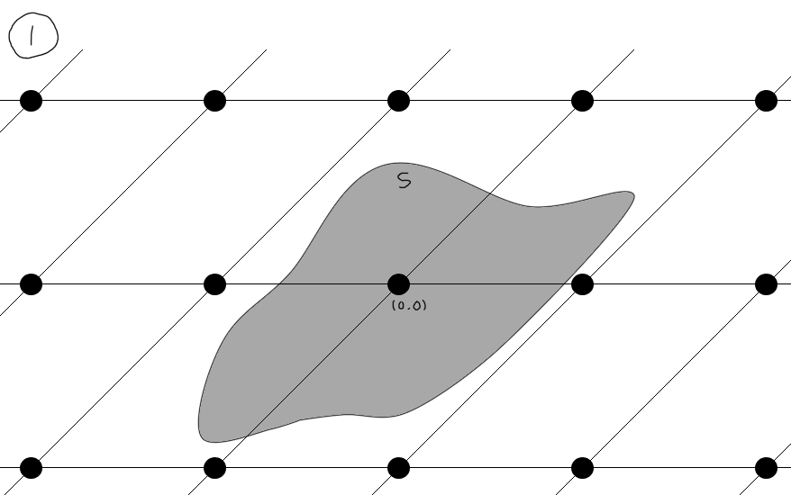

LLLを理解するぞ
Contents
はじめに
大体タイトル通りの記事です．LLLを解説していきます．
性質や定理の証明は一つ一つ丁寧に与えていこうと思いますが，何から何まで全てやって記事を書ききる自信はないので，基本的な線形代数の内容(特に線形空間やノルム周り)は前提知識として進めていきます．また，格子に関する基本的な性質やLLLを理解するのに必要な部分の解説しかないので，もしこの記事を読んでもっと勉強したいと思った方は適当な本を読むことをお勧めします（つまり内容が薄いです．許してください）．またその関係上内容が直感的にわかりやすいものでは無いかもしれませんのでそのあたりはご了承ください．
もし自分が理解したつもりになっている内容に誤りがあったらコメントで教えてください．特に用語の日本語訳が非常に怪しい感じになっています．証明の書き方が稚拙だったり，特にサイズ簡約の部分で添え字が複雑になってしまっていたり，正直そこまでうまく説明できている自信がないためお手柔らかにお願いします……あと，判断できない命題はとりあえず定理にしています．お許しください．
とにかくコードだけ欲しいという方はこのリポジトリを参照してください．verifyはしてないので結構怪しい感じですが，オープンソースで上がっている他のLLLと比較したら出力が同じだったので多分大丈夫だと思います．
1. 格子
一応この記事は，格子を知らない状態からLLLを理解するまでの道みたいな感じで作ったつもりです．ということで，前提となる格子からをちゃんと定義しておきます．
定義 1.1: 線形独立な $n$ 本のベクトル $b _ 1,b _ 2,\cdots ,b _ n \in \mathbb{R} ^ m$ によって張られる格子 $ \mathcal{L}(b _ 1,b _ 2,\cdots,b _ n)$ を次のように定義する．$$\displaystyle \mathcal{L}(b _ 1,b _ 2,\cdots,b _ n) = \left\{ \sum x _ ib _ i \mathrel{}\middle|\mathrel{} x _ i \in \mathbb{Z} \right\}$$この時， $ \left\{b _ 1,b _ 2,\cdots,b _ n \right\}$ を格子の基底と呼び， $ n$ を格子の次数と言う． また $ n = m$ であるとき，格子 $ \mathcal{L}(b _ 1,b _ 2,\cdots,b _ n)$ はfull-rankであると言う．
full-rankでない例は $ m > n$ の場合を適当に考えれば作れます．例えば $ {} ^ t\!b _ 1 = \begin{pmatrix} 1 & 0 & 1 \end{pmatrix},\ {} ^ t\!b _ 2 = \begin{pmatrix} 0 & 1 & 2 \end{pmatrix}$ とすれば $ b _ 1$ と $ b _ 2$ は線形独立ですが，これによって作られる二次元の格子 $ \mathcal{L}(b _ 1,b _ 2)$ は明らかにfull-rankになりません．また， $ m < n$ の時は各ベクトルが線形独立にならないので注意してください．
格子の表記について，基底となる列ベクトル $ b _ 1,b _ 2,\cdots,b _ n$ を横に並べた $ m \times n$ 行列 $ B$ を使って$$ \mathcal{L}(B) = \mathcal{L}(b _ 1,b _ 2,\cdots,b _ n) = \left\{ Bx \mathrel{}\middle|\mathrel{} x \in \mathbb{Z} ^ n \right\}$$と表すこともあります．このときの $B$ のことを基底行列と言います．
一応図を用意しました．黒い点が格子の元で，原点から出ている黒い矢印が基底を構成するベクトルです．なんとなく格子という名前通りの集合になっていますね．
 $$ \displaystyle B=\begin{pmatrix} 1 & 0 \\ 0 & 1 \end{pmatrix}$$
$$ \displaystyle B=\begin{pmatrix} 1 & 0 \\ 0 & 1 \end{pmatrix}$$
 $$ \displaystyle B=\begin{pmatrix} 1 & 1 \\ 1 & 2 \end{pmatrix}$$
$$ \displaystyle B=\begin{pmatrix} 1 & 1 \\ 1 & 2 \end{pmatrix}$$
この例を見て気づいた方は多いと思いますが，実は倍数全体の集合 $ m\mathbb{Z} ^ n$ も格子です．基底行列を $ mI$ と取ればうまく張れると思います． ちなみに上の例の二つの基底行列は同じ格子を張ります．このような，同じ格子を張るような基底は無限に存在します．
定義 1.2: 整数行列かつ行列式が $1$ か $-1$ であるような正方行列をユニモジュラ行列という．
ユニモジュラ行列 $ U$ の行基本変形を考えれば， $ U ^ {-1}$ もまたユニモジュラ行列であることがわかります．また，二つのユニモジュラ行列 $ U,U'$ について， $ \det(UU') = \det U \cdot \det U' = \pm1$ となります．よって $ n$ 次のユニモジュラ行列全体は $ n$ 次の正則行列からなる群の部分群となります．ちなみにこの群は， $ GL _ n(\mathbb{Z})$ と表せます．
実は，このユニモジュラ行列を使えば基底行列$ B _ 1, B _ 2$が同じ格子を張るか否かを考えることができます．
定理 1.1: 基底行列 $ B _ 1, B _ 2 \in \mathbb{R} ^ {m \times n}$ が同じ格子を張る，つまり $ \mathcal{L}(B _ 1)= \mathcal{L}(B _ 2)$ である必要十分条件は， $ B _ 1 = B _ 2U$ となるユニモジュラ行列 $ U$ が存在することである．
証明: まず $ \mathcal{L}(B _ 1) = \mathcal{L}(B _ 2)$ と仮定する．このとき格子の定義より， $ B _ 1 = B _ 2V,\ B _ 2 = B _ 1W$ を満たす整数の正方行列 $V,W$ が存在する．従って $ B _ 1 = B _ 1WV$ なので $ B _ 1(I - WV)= O$ となる（ただし $ I$ は $ n$ 次の単位行列）． $ B _ 1$ は線形独立なベクトルの集まりだったため $ WV = I$ となり，行列式を考えると $ \det(WV) = \det W \cdot \det V = 1$ ． $ \det W,\det V \in \mathbb{Z}$ なので $ \det W=\det V= \pm 1$ となる． 次に，あるユニモジュラ行列 $ U$ を使って $ B _ 1 = B _ 2U$ と書けたと仮定する．この時，格子の定義より $ \mathcal{L}(B _ 1) \subseteq \mathcal{L}(B _ 2)$ である．また $ B _ 1U ^ {-1} = B _ 2$ でもあり， $ U ^ {-1}$ もユニモジュラ行列なので同様に $ \mathcal{L}(B _ 2) \subseteq \mathcal{L}(B _ 1)$ ．従って $ \mathcal{L}(B _ 1) = \mathcal{L}(B _ 2)$ ． $ ■$
このように，同じ格子の基底同士はユニモジュラ行列によって関連付けられています．
2. 格子の行列式
定義 2.1: 基底行列 $ B = \begin{pmatrix} b _ {1} & \cdots & b _ {n} \end{pmatrix} \in \mathbb{R} ^ {m \times n}$ の格子 $ \Lambda$ のスパン $ \mathrm{span}(\Lambda)$ とは，次のような線形包である．$$ \mathrm{span}(\Lambda) = \mathrm{span}(b _ 1,\cdots,b _ n) = \mathrm{span}(B) = \left\{ By \mathrel{}\middle|\mathrel{} y \in \mathbb{R} ^ n \right\}$$
定義より，格子 $ \Lambda$ の基底行列 $ B$ は $ \mathrm{span}(\Lambda)$ の基底行列にもなります．また，格子 $ \Lambda$ がfull-rankな時， $ \mathrm{span}(\Lambda) = \mathbb{R} ^ n$ となります．このスパンのおかげで格子の点と点の隙間を考えることができ，格子上の計算をスパンにマッピングして行ってから元の格子に射影し直すという操作を使うことで，それなりに自由に計算が行えるようになります．後述のLLLアルゴリズムもこの方法を使っています．
定義 2.2: 格子の基底行列 $ B = \begin{pmatrix} b _ {1} & b _ {2} & \cdots & b _ {n} \end{pmatrix} \in \mathbb{R} ^ {m \times n}$ の基本平行体 $ \mathcal{P}(B)$ を次のように定義する．$$ \displaystyle \mathcal{P}(B) = \left\{ \sum ^ {n} _ {i=1}x _ ib _ i \mathrel{}\middle|\mathrel{} 0 \leq x _ i < 1 \right\}$$
基本平行体は，上の格子の例における灰色に塗りつぶしてある部分と対応しています．また，格子の定義より，各格子ベクトルを基準として基本平行体を平行移動させていくことで $ \mathrm{span}(B)$ をタイリングすることができます．つまり，次の式が成り立ちます．$$ \displaystyle \bigcup _ {v\in \mathcal{L}( B)}( v+\mathcal{P}( B)) = \mathrm{span}(B)$$また，基本平行体に限らずこのような性質を持つ集合を基本領域と呼びます．例えば集合$$ \displaystyle \mathcal{C}(B) = \left\{ Bx \mathrel{}\middle|\mathrel{} -\frac{1}{2} \leq x < \frac{1}{2} \right\}$$も基本領域です（基本平行体とほとんど変わらないけど）．
定義 2.3: 基底行列 $ B \in \mathbb{R} ^ {m \times n}$ の格子 $ \Lambda$ の行列式を次の式で定義する．$$ \det \Lambda = \mathrm{vol}(\mathcal{P}(B)) = \sqrt{\det\left({} ^ t\!BB\right)}$$但し $ \mathrm{vol}(\mathcal{P}(B))$ は基本平行体 $ \mathcal{P}(B)$ の $ n$ 次元体積とする．
$ B$ が正方行列，つまりfull-rankな格子の基底行列であれば $ \det B = \det({} ^ t\!B)$ なので， $ \det \Lambda$ はより簡単に $ \det \Lambda = |\det B|$ と表せます． また，格子の行列式は基底の取り方によらず一定です．つまり，ある格子の基底行列 $ B _ 1,B _ 2$ について $ \Lambda = \mathcal{L}(B _ 1) = \mathcal{L}(B _ 2)$ ならば， $$ \det \Lambda = \det(\mathcal{L}(B _ 1)) = \det(\mathcal{L}(B _ 2))$$ が成り立ちます．なぜなら， $ \mathcal{L}(B _ 1) = \mathcal{L}(B _ 2)$ なのであるユニモジュラ行列 $ U$ を用いて $ B _ 1 = B _ 2U$ とかけ，この時 $$ \det(\mathcal{L}(B _ 1)) = \sqrt{\det\left({} ^ t\!B _ 1B _ 1\right)} = \sqrt{\det\left({} ^ t\!U{} ^ t\!B _ 2B _ 2U\right)} = \sqrt{\det\left({} ^ t\!B _ 2B _ 2\right)}$$ が成り立つからです．よって次の定理が得られます．
定理 2.1 格子 $ \Lambda$ の基底行列 $ B _ 1,B _ 2$ について，次の式が成り立つ．$$ \det \Lambda = \det(\mathcal{L}(B _ 1)) = \det(\mathcal{L}(B _ 2))$$
逆は言えないので注意してください（基底行列の次数が違う場合が反例としてあげられます）．
3. 逐次最小
定義 3.1: $ B \in \mathbb{R} ^ {m \times n}$ を基底行列とする格子 $ \Lambda$ について，自然数 $ 1 \leq i \leq n$ に対する $ i$ 番目の逐次最小 $ \lambda _ i = \lambda _ i(\Lambda)$ を次の式で定義する．$$\lambda _ {i} (\Lambda )=\inf\left\{r \mathrel{}\middle|\mathrel{} i\leq \dim (\mathrm{span} (\Lambda \cap B(0;r)))\right\} \ \\ \hspace{6em} \mathit{where} \ B(0;r)=\left\{x\in \mathbb{R} ^ {m} \mathrel{}\middle|\mathrel{} |x| \leq r \right\} $$
多分ぱっと見ではこの式が何を言っているのかわかりにくいと思いますが（自分はわからなかった）言っていることは実は結構簡単で，要するに逐次最小 $ \lambda _ i$ とは， $ i$ 個の線形独立な格子の元を含む原点中心の最小の超球の半径です． この定義より，格子 $ \Lambda$ の線形独立な格子ベクトルを短い順に $ n$ 個とってできたベクトルの組 $ v _ 1,\cdots,v _ n$ の長さはそれぞれ $ \lambda _ 1,\cdots,\lambda _ n$ となることがわかります．ただし注意として，五次元以上の格子では $ \left\{ v _ 1,\cdots,v _ n \right\}$ が必ずしも $ \Lambda$ の基底になるとは限りません． 例えば格子 $ \Lambda$ の基底行列 $ B$ を$$\displaystyle B=\begin{pmatrix} b _ {1} & \cdots & b _ {5} \end{pmatrix} = \begin{pmatrix} 2 & & & & 1\\ & 2 & & & 1\\ & & 2 & & 1\\ & & & 2.2 & 1.1\\ & & & & 1 \end{pmatrix}$$としたとき，ノルムが逐次最小になる線形独立な格子ベクトルの組を並べた行列 $ V$ は次のようになります．$$ \displaystyle V=\begin{pmatrix} v _ {1} & \cdots & v _ {5} \end{pmatrix} =\begin{pmatrix} 2 & & & & \\ & 2 & & & \\ & & 2 & & \\ & & & 2.2 & \\ & & & & 2 \end{pmatrix}$$ $ v _ 5$ は $ 2b _ 5 - b _ 4 - b _ 3 - b _ 2 - b _ 1$ で作れます．しかし，格子は基底ベクトルの整数倍しか含まないため， $ b _ 5 \notin \mathcal{L}(V)$ となるため $ V$ は $ \Lambda$ の基底になれません（基底は実数のベクトルが許されているものの格子点はその整数倍しか許されていないところがミソです）．これと同じような基底行列を用意してあげれば，より高い次元の格子での反例も簡単に作れます．
では次に，格子における有名な諸定理を紹介します．
定理 3.1 (Blichfeldtの定理): 基底行列 $ B \in \mathbb{R} ^ {m \times n}$ の格子を $ \Lambda$ とする．このとき集合 $ S \subseteq \mathrm{span}(B)$ について $ \mathrm{vol}(S) > \det \Lambda$ ならば $ z _ 1 - z _ 2 \in \Lambda$ なる $ z _ 1,z _ 2 \in S$ が存在する．
証明: $ S _ x = S \cap (x + \mathcal{P}(B)),\ x \in \Lambda$ とすると次の式が成り立つ．$$ \displaystyle S = \bigcup _ {x \in \Lambda} S _ x$$従って，$$ \displaystyle \mathrm{vol}(S)=\sum _ {x \in \Lambda} \mathrm{vol}(S _ x)$$となる．ところで， $ S _ x' = S _ x - x = (S - x) \cap \mathcal{P}(B)$ とすると $ \mathrm{vol}(S _ x)=\mathrm{vol}(S' _ x)$ なので，仮定より$$ \displaystyle \det \Lambda < \mathrm{vol}(S) = \sum _ {x \in \Lambda} \mathrm{vol}(S _ x) = \sum _ {x \in \Lambda} \mathrm{vol}(S _ x')$$また， $ S _ x' \subseteq \mathcal{P}(B)$ なので $ (S _ x) _ {x \in \Lambda}$ は素集合系ではないため， $ S _ x' \cap S _ y' \neq \emptyset$ かつ $ x \neq y$ を満たす $ x, y \in \Lambda$ が存在する． よって， $ z \in S _ x' \cap S _ y' \neq \emptyset$ に対し $ z _ 1 = z + x \in S _ x, \ z _ 2 = z + y \in S _ y$ とすれば $ z _ 1 - z _ 2 = x - y \in \Lambda$ となり，定理を満たすベクトルを構成することができる．$ ■$
まあ要するに，格子 $ \mathcal{L}(B) $ のスパン上の，体積が $ \det \Lambda $ を超える集合は，基本平行体で切り分けて一つの領域に集めた時必ず重なる点があるから成り立つということです（下図参照）．

このBlichfeldtの定理を利用すれば，次の有名な定理が簡単に示せます．
定理 3.2 (Minkowskiの凸体定理): $ \Lambda $ を $ n $ 次のfull-rankな格子とする．このとき原点に対して対称な凸集合 $ M \subset \mathbb{R} ^ n $ が $ \mathrm{vol}(M) > 2 ^ n \det \Lambda $ ならば， $ x \in M $ を満たす $ x \neq 0 \in \Lambda $ が存在する．
証明: $ M' = \left\{x \mathrel{}\middle|\mathrel{} 2x \in M \right\} $ とする．このとき仮定より $ \mathrm{vol}(M') = 2 ^ {-n}\mathrm{vol}(M) > \det \Lambda $ となり，Blichfeldtの定理より， $ z _ 1 - z _ 2 \in \Lambda \setminus \left\{0\right\} $ を満たす $ z _ 1, z _ 2 \in M' $ が存在する．また， $ z _ 1,z _ 2 $ は $ M' $ の定義より $ 2z _ 1,2z _ 2 \in M $ を満たすため，仮定より $ -2z _ 2 \in M $ なので $ x = z _ 1 - z _ 2 = \frac{2z _ 1 - 2z _ 2}{2} \in M $ とすれば定理を満たすベクトルを構成することができる． $ ■ $
定理 3.3: $ n $ 次のfull-rankな格子 $ \Lambda $ の逐次最小 $ \lambda _ 1 $ について次の式が成り立つ．$$ \displaystyle \lambda _ 1 \leq \sqrt{n}(\det \Lambda) ^ {\frac{1}{n}} $$
証明: 閉球 $ B(0; r) \subset \mathbb{R} ^ n $ について，立方体 $ X = \left[-\frac{r}{\sqrt{n}}, \frac{r}{\sqrt{n}} \right] ^ {n} \subset \mathbb{R} ^ n $ は $ X \subseteq B(0; r) $ を満たす．従って， $ \mathrm{vol}(X) = 2 ^ n(\frac{r}{\sqrt{n}}) ^ n \leq \mathrm{vol}(B(0;r)) $ となる．よって $ r = \sqrt{n}(\det \Lambda) ^ {\frac{1}{n}} $ とすれば $ \mathrm{vol}(B(0; r)) \geq 2 ^ n\det \Lambda $ が成り立ち，Minkowskiの凸体定理より $ B(0; r) $ の内側に格子点が存在するため， $ r = \sqrt{n}(\det \Lambda) ^ {\frac{1}{n}} $ より短い格子ベクトルが存在する． $ ■ $
4. グラム・シュミットの直交化法
定義 4.1: 内積空間 $ V $ の基底 $ \left\{b _ 1, b _ 2,\cdots,b _ n \right\} $ から，同じ空間を張るような直交基底 $ \left\{b _ 1 ^ *,b _ 2 ^ *,\cdots,b _ n ^ * \right\} $ を次の式から求める操作をグラム・シュミットの直交化法という． $$ \displaystyle b ^ {*} _ {i} =b _ {i} -\sum ^ {i-1} _ {j=1} \mu _ {i,j} b ^ {*} _ {j}\ \mathit{where}\ \mu _ {i,j} =\frac{\langle b _ {i} ,b ^ {*} _ {j} \rangle }{\langle b ^ {*} _ {j} ,b ^ {*} _ {j} \rangle } $$
正規化しないことに注意してください（グラム・シュミットの正規直交化として書いてあることが多いので）． また簡単のため，グラム・シュミットの直交化における係数 $ \mu _ {i,j}\ (1 \leq j < i \leq n) $ をグラムシュミット係数と呼び， $ \left\{ b _ 1,\cdots,b _ n \right\} $ をグラム・シュミットの直交化法で直交化したときに得られる新たなベクトル $ b _ 1 ^ *,\cdots,b _ n ^ * $ をグラムシュミットベクトルと呼ぶことにします．さらに，グラム・シュミットの直交化法を，基底行列 $ B = \begin{pmatrix} b _ {1} & \cdots & b _ {n} \end{pmatrix} $ から $ B ^ * = \begin{pmatrix} b _ {1} ^ * & \cdots & b _ {n} ^ * \end{pmatrix} $ を得る操作としても用いるようにします． 一応疑似コードも載せておきます．
 見てわかる通り，計算量は $ \Theta(n ^ 2m) $ です．
見てわかる通り，計算量は $ \Theta(n ^ 2m) $ です．
では次に，グラムシュミットベクトルの基本的な性質を紹介します．
性質 4.1: 内積空間 $ V $ の基底を $ \left\{b _ 1,\cdots,b _ n \right\} $ とする．このとき，グラムシュミットベクトル $ b _ 1 ^ *,\cdots,b _ n ^ * $ は自然数 $ 1 \leq i \leq n $ に対し次の式を満たす．
- $| b _ i ^ * | \leq | b _ i | $
- $\langle b _ i, b _ i ^ * \rangle = \langle b _ i ^ *,b _ i ^ * \rangle $
証明: まず一つ目の式について，$$ \displaystyle \begin{aligned} | b ^ {*} _ {i} | ^ {2} &=\langle b _ {i} -\sum ^ {i-1} _ {j=1} \mu _ {i,j} b ^ {*} _ {j} ,b _ {i} -\sum ^ {i-1} _ {j=1} \mu _ {i,j} b ^ {*} _ {j} \rangle \\ &=| b _ {i} | ^ {2} -\sum ^ {i-1} _ {j=1} \mu ^ {2} _ {i,j} | b ^ {*} _ {j} | ^ {2} \end{aligned} $$なので明らかに $ | b _ i ^ * | \leq | b _ i | $ が成り立つ． また，二つ目の式も同様に$$ \displaystyle \begin{aligned} \langle b _ {i} ,b ^ {*} _ {i} \rangle & =\langle b _ {i} ,b _ {i} -\sum ^ {i-1} _ {j=1} \mu _ {i,j} b ^ {*} _ {j} \rangle \\ & =| b _ {i} | ^ {2} -\sum ^ {i-1} _ {j=1} \mu _ {i,j} \langle b ^ {*} _ {i} +\sum ^ {i-1} _ {k=1} \mu _ {i,k} b ^ {*} _ {k} ,b ^ {*} _ {j} \rangle \\ & =| b _ {i} | ^ {2} -\sum ^ {i-1} _ {j=1} \mu _ {i,j} | b ^ {*} _ {j} | ^ {2} \end{aligned} $$が成り立ち， $ \langle b _ i, b _ i ^ * \rangle = |b _ i ^ *| ^ 2 = \langle b _ i ^ *, b _ i ^ * \rangle $ となる． $ ■ $
また，格子 $ \Lambda $ の基底 $ \left\{ b _ 1, \cdots, b _ n \right\} \in \mathbb{R} ^ {m \times n} $ のグラムシュミットベクトルは，定義より明らかに $ \mathrm{span}(b _ 1,\cdots,b _ n) = \mathrm{span}(b _ {1} ^ *, \cdots , b _ {n} ^ *) $ となります．
定理 4.2: 格子 $ \Lambda $ の基底を $ \left\{ b _ 1,\cdots,b _ n \right\} $ とする．この時，格子の行列式 $ \det \Lambda $ をグラムシュミットベクトル $ b _ 1 ^ *,\cdots,b _ n ^ * $ を用いて次のように表すことができる．$$ \displaystyle \det \Lambda = \prod _ {i = 1} ^ n |b _ i ^ * | $$
証明: $ B = \begin{pmatrix} b _ {1} & b _ {2} & \cdots & b _ {n} \end{pmatrix} $ とする．このとき， $ b _ i = b _ i ^ * + \sum ^ {i-1} _ {j=1} \mu _ {i,j} b ^ {*} _ {j} $ なので次の式が成り立つ．$$ \displaystyle \begin{eqnarray*} B & = & \begin{pmatrix} b ^ {*} _ {1} & b ^ {*} _ {2} +\mu _ {2,1} b ^ {*} _ {1} & b ^ {*} _ {3} +\mu _ {3,1} b ^ {*} _ {1} +\mu _ {3,2} b ^ {*} _ {2} & \cdots & b ^ {*} _ {n} +\sum ^ {n-1} _ {j=1} \mu _ {i,j} b ^ {*} _ {j} \end{pmatrix}\\ & = & \begin{pmatrix} b ^ {*} _ {1} & b ^ {*} _ {2} & b ^ {*} _ {3} & \cdots & b ^ {*} _ {n} \end{pmatrix}\begin{pmatrix} 1 & \mu _ {2,1} & \mu _ {3,1} & \cdots & \mu _ {n,1}\\ 0 & 1 & \mu _ {3,2} & \cdots & \mu _ {n,2}\\ 0 & 0 & 1 & \cdots & \mu _ {n,3}\\ \vdots & \vdots & \vdots & \ddots & \vdots \\ 0 & 0 & 0 & \cdots & 1 \end{pmatrix}\\ & = & QR \end{eqnarray*} $$従って，$$ \displaystyle \begin{eqnarray*} \det \Lambda & = & \sqrt{\det ( ^ t\!BB)}\\ & = & \sqrt{\det ( ^ t\!R ^ t\!QQR)}\\ & = & \sqrt{\det ( ^ t\!QQ)}\\ & = & \prod _ {i = 1} ^ n |b _ i ^ * | \end{eqnarray*} $$ よって示された．$ ■ $
定義 4.2: 格子 $ \Lambda $ の基底を $ \left\{b _ 1,\cdots,b _ n\right\} $ とする．この時次の式で定義される量 $ \delta $ を直交欠陥と言う．$$ \displaystyle \delta = \frac{\prod ^ {n} _ {i=1} | b _ {i} | }{\det \Lambda } $$$ \det \Lambda $ は，スパンの直交化した基底ベクトルのノルムの総乗でした．そのため直交欠陥は，元の基底がどのくらい直交していないかを表す指標となります．また，元のベクトルが直交していた場合，グラム・シュミットの直交化法を行っても基底は変わらないので直交欠陥は $ 1 $ になります．
定理 4.3: 格子 $ \Lambda $ の直交欠陥 $ \delta $ について次の式が成り立つ．$$ \delta \geq 1 $$
証明: $ \Lambda $ の基底を $ \left\{b _ 1,b _ 2,\cdots,b _ n\right\} $ とし，そのグラムシュミットベクトルを $ b _ 1 ^ *,\cdots,b _ n ^ * $ とする．この時，自然数 $ 1 \leq i \leq n $ に対し $ | b _ i ^ * | \leq | b _ i | $ なので，$ | b _ 1 ^ * | | b _ 2 ^ * | \cdots | b _ n ^ * | \leq |b _ 1| |b _ 2| \cdots |b _ n| $ となる． 従って定理4.2より， $ \det \Lambda \leq \prod ^ {n} _ {i=1} | b _ {i} | $ となる． $ ■ $
5. Lagrangeの方法
定義 5.1: 格子の基底 $ \left\{ b _ 1, b _ 2 \right\} \in \mathbb{R} ^ {m \times 2} $ が任意の $ x \in \mathbb{Z} $ に対し次の条件を満たすとき，簡約されているという．$$ |b _ 1| \leq |b _ 2| \leq |b _ 2+xb _ 1| $$ また，簡約されている基底のことを簡約基底と呼ぶ．ある格子の簡約基底は，同じ格子を張るような基底の中で直交欠陥が最も $ 1 $ に近く，各ベクトルが短い基底です．また，ある格子が与えられたときその簡約基底を求めることを簡約化と言います．基底の簡約化は次のような性質から，最も長さの短い格子ベクトルの計算に用いられます．
定理 5.1: 二次元の格子 $ \Lambda $ の簡約基底を $ \left\{b _ 1,b _ 2\right\} \in \mathbb{R} ^ {m \times 2} $ とし，逐次最小を $ \lambda _ 1,\lambda _ 2 $ とする．この時次の式が成り立つ．$$ |b _ 1| = \lambda _ 1,\ |b _ 2| = \lambda _ 2 $$
証明: 適当な格子ベクトル $ v = l _ 1b _ 1 + l _ 2b _ 2 \neq 0 $ を考える． $ l _ 2 = 0 $ なら $ |v| \geq |b _ 1| $ となり，また $ l _ 2 \neq 0 $ の時は， $ l _ 1 = ql _ 2 + r,\ q,r \in \mathbb{Z},\ 0 \leq r < |l _ 2| $ と書けば $ v = rb _ 1 + l _ 2(b _ 2 + qb _ 1) $ である．従って，$$ \displaystyle \begin{eqnarray*} |v| &\geq& |l _ 2||b _ 2 + qb _ 1| - r|b _ 1|\\ &=& (|l _ 2| - r)|b _ 2+qb _ 1| + r(|b _ 2 + qb _ 1| - |b _ 1|)\\ &\geq& |b _ 2 + qb _ 1|\\ &\geq& |b _ 2| \geq |b _ 1| \end{eqnarray*} $$よって示された． $ ■ $
簡約であることと同値な次の条件を考えれば，具体的にどんなベクトルによって構成されるか考えやすくなると思います．
定理 5.2: 二次元の格子 $ \Lambda $ の基底 $ \left\{b _ 1,b _ 2 \right\} \in \mathbb{R} ^ {m \times 2} $ が簡約基底であるための必要十分条件は次の式を満たすことである．$$ |b _ 1| \leq |b _ 2| \leq |b _ 2 \pm b _ 1| $$
証明: まず $ b _ 1,b _ 2 $ が簡約されていると仮定する．定義5.1において $ x = \pm 1 $ とすれば $ |b _ 1| \leq |b _ 2| \leq |b _ 2 \pm b _ 1| $ ． 次に $ b _ 1,b _ 2 $ が $ |b _ 1| \leq |b _ 2| \leq |b _ 2 \pm b _ 1| $ を満たすと仮定する．ここで，関数 $ f(\mu) = |b _ 2 + \mu b _ 1 | ^ 2 = |b _ 2| ^ 2 - 2\mu \langle b _ 1,b _ 2 \rangle + \mu ^ 2|b _ 1| ^ 2 $ の最小値が $ -1 < \mu < 1 $ の時取られることを考えれば， $ f(\mu) $ は二次関数なので $ |x| > 1 $ を満たす整数 $ x $ に対し $ f(0) \leq f(x) $ となり，同じ $ x $ に対し $ |b _ 2| \leq |b _ 2 + xb _ 1 | $ となる．従って仮定より任意の $ x \in \mathbb{Z} $ に対し $ |b _ 1| \leq |b _ 2| \leq |b _ 2 + xb _ 1| $ が成り立つ．よって示された． $ ■ $
基底の簡約化は一般には難しい問題です．ところが二次元の場合は，厳密解が多項式時間で求まるLagrangeの方法というアルゴリズムが存在し，具体的には次のような操作で簡約することができます．
 $ 7 $ 行目の $ \mu _ {2, 1} $ は， $ |b _ 2 - \mu _ {2,1}b _ 1 | ^ 2 $ が最小となるような $ b _ 1 $ の係数を設定していることに注意してください． $ \mu _ {2,1} $ の最小値は，下に凸な二次関数 $ |b _ 2 - \mu _ {2,1}b _ 1 | ^ 2 = |b _ 2| ^ 2 - 2\mu _ {2,1} \langle b _ 1,b _ 2 \rangle + \mu _ {2,1} ^ 2|b _ 1| ^ 2 $ の最小値でもあるので，適当に微分して $ -2\langle b _ {1} ,b _ {2} \rangle +2\mu _ {2,1} | b _ {1} | ^ {2} =0 $ の解を求めれば $ \mu _ {2, 1} = \langle b1, b2 \rangle / |b _ 1| ^ 2 $ が導けます．つまり，二つのベクトルの差のノルムができるだけ短くなるように計算しているだけです．
$ 7 $ 行目の $ \mu _ {2, 1} $ は， $ |b _ 2 - \mu _ {2,1}b _ 1 | ^ 2 $ が最小となるような $ b _ 1 $ の係数を設定していることに注意してください． $ \mu _ {2,1} $ の最小値は，下に凸な二次関数 $ |b _ 2 - \mu _ {2,1}b _ 1 | ^ 2 = |b _ 2| ^ 2 - 2\mu _ {2,1} \langle b _ 1,b _ 2 \rangle + \mu _ {2,1} ^ 2|b _ 1| ^ 2 $ の最小値でもあるので，適当に微分して $ -2\langle b _ {1} ,b _ {2} \rangle +2\mu _ {2,1} | b _ {1} | ^ {2} =0 $ の解を求めれば $ \mu _ {2, 1} = \langle b1, b2 \rangle / |b _ 1| ^ 2 $ が導けます．つまり，二つのベクトルの差のノルムができるだけ短くなるように計算しているだけです．
6. LLL簡約基底とサイズ簡約
Lagrangeの方法は，二次元の格子の簡約しかできない代わりに厳密解が求まるアルゴリズムでした．それに対しLLL(Lenstra–Lenstra–Lovász)アルゴリズムは，一般の次元に対して簡約基底の近似が行えます．ということで，そもそもの簡約基底の近似とはどういったものなのかちゃんと定義しておきます．
定義 6.1: 格子 $ \Lambda $ の基底 $ \left\{ b _ 1,\cdots,b _ n \right\} \in \mathbb{R} ^ {m \times n} $ とそのグラムシュミットベクトル $ b _ 1 ^ *,\cdots,b _ n ^ * \in \mathbb{R} ^ {m \times n} $ について，ある $ \delta \in \mathbb{R}\ (\frac{1}{4} < \delta < 1) $ を用いて次の条件が成り立つとき，基底がパラメータ $ \delta $ でLLL簡約されているという．
- 自然数 $ 1 \leq j < i \leq n $ について $ |\mu _ {i,j}| \leq \frac{1}{2} $ (サイズ簡約)
- 自然数 $ 1 \leq i< n $ について $ (\delta - \mu _ {i+1, i} ^ 2)|b _ i ^ *| ^ 2 \leq |b _ {i+1} ^ *| ^ 2 $ (Lovászの条件)
一つ目の条件はLLL以外の格子アルゴリズムでも度々出てくる重要な条件で，これ満たす基底はサイズ簡約されていると言います．また二つ目の条件はLovászの条件と呼ばれ，これのおかげで簡約の定義の強さを緩めることができます．
次に，格子の基底が与えられたとき，グラムシュミットベクトルを変えないようにサイズ簡約された基底を作るアルゴリズムを示します．これを使えばサイズ簡約の条件を簡単に達成できます．

補題 6.1: 格子 $ \Lambda $ の基底を $ \left\{b _ 1,\cdots,b _ n \right\} \in \mathbb{R} ^ {m \times n} $ とし，そのグラムシュミット係数を $ \mu _ {i,j}\ (1\leq j < i \leq n) $ ，グラムシュミットベクトルを $ b _ 1 ^ *,\cdots,b _ n ^ * $ とする．また，Algorithm 3でこの格子の基底をサイズ簡約したとき得られるベクトルの組を $ \left\{ b _ 1',\cdots,b _ n' \right\} $ とし，二重ループの内側でベクトルを張りなおした時のベクトルの組を $ 1 \leq j < i \leq n $ に対して $ { b _ {i,j,1}',\cdots,b _ {i,j,n}' } $ とする．つまり $ b _ {i,j,i}' = b _ i - \lfloor \mu _ {i,j} \rceil b _ {j} ,\ b _ {k} '=b _ {k} \ ( k\neq i) $ ． また， $ { b _ {i,j,1}',\cdots,b _ {i,j,n}' } $ のグラムシュミットベクトルを $ b _ {i,j,1}' ^ *,\cdots,b _ {i,j,n}' ^ * $ とし，そのグラムシュミット係数を $ \nu _ {i,j,k,l} \ ( 1\leq l< k\leq n) $ としたとき，次の式が成り立つ．
- 自然数 $ 1 \leq k \leq n $ に対し $ b ^ {\prime *} _ {i,j,k} =b ^ {*} _ {k} $
- 自然数 $ 1 \leq l \leq j $ に対し $ \nu _ {i,j,i,l} =\mu _ {i,l} -\lfloor \mu _ {i,j} \rceil \mu _ {j,l} $ で，特に $ |\nu _ {i,j,i,j} |\leq \frac{1}{2} $ となる．
- その他のグラムシュミット係数に変化はない．
証明: 一つ目の式は $ \mathrm{span}( b _ {k} ,\cdots ,b _ {n}) $ 及び $ \mathrm{span}( b' _ {i,j,k} ,\cdots ,b _ {i,j,n}) $ への射影を考えれば明らかなので，二つ目の式のみ示す． 定義より，$$ \displaystyle \nu _ {i,j,i,l} = \frac{\langle b' _ {i,j,i} ,b ^ {\prime *} _ {i,j,l} \rangle }{\langle b ^ {\prime *} _ {i,j,l} ,b ^ {\prime *} _ {i,j,l} \rangle }=\frac{\langle b _ {i} -\lfloor \mu _ {i,j} \rceil b _ {j} ,b ^ {*} _ {l} \rangle }{| b ^ {*} _ {l} | ^ {2}}=\mu _ {i.l} -\lfloor \mu _ {i,j} \rceil \mu _ {j,l} $$である． $ |\nu _ {i,j,i,j} |=|\mu _ {i.j} -\lfloor \mu _ {i,j} \rceil \mu _ {j,j} |=|\mu _ {i,j} -\lfloor \mu _ {i,j} \rceil | $ なので，四捨五入の性質より $ |\nu _ {i,j,i,j} | \leq \frac{1}{2} $ が成り立つ． また，その他のグラムシュミット係数が変化しないことは $ b _ {i,j,k} '=b _ {k} \ ( k\neq i) $ より明らかである． $ ■ $
補題6.1より，Algorithm 3の正当性を確認することができました．また，補題6.1の1つ目の式から，Algorithm 3の6行目の処理は2つ目の式を使ってグラムシュミット係数のみ計算すればいいことがわかります．しかしここでは簡単のため，グラム・シュミットの直交化をするようにしています．この部分の最適化は，LLLの説明が終わった後の最適化の部分に纏めて書いてあるので安心してください．
7. Lovászの条件
LLL簡約のLovászの条件は， $ |b _ {i+1} ^ *| ^ 2 + \mu _ {i+1, i} ^ 2 |b _ i ^ *| ^ 2 = |b _ {i+1} ^ * + \mu _ {i+1,i}b _ i ^ *| ^ 2 $ より次のような式に書き換えることもできます．$$ \delta |b _ i ^ *| ^ 2 \leq |b _ {i+1} ^ * + \mu _ {i+1,i}b _ i ^ *| ^ 2 $$ここで正射影 $ \pi _ i: \mathbb{R} ^ m \to \mathrm{span}( b _ i ^ * , \cdots , b _ n ^ * ) $ を考えてみます．具体的には$$ \displaystyle \pi _ i(x) = \sum _ {j=i} ^ n \frac{\langle x,b _ j ^ * \rangle}{\langle b _ j ^ *,b _ j ^ * \rangle}b _ j ^ * $$となります．これを用いればLovászの条件は， $ \delta |\pi _ i(b _ i)| ^ 2 \leq |\pi _ i(b _ {i+1})| ^ 2 $ となることがわかります．この式からもわかるように，この条件は，基底の簡約の条件 $ b _ i \leq b _ {i+1} $ を $ \delta $ を用いて緩和したものと同じようなものになります． また，サイズ簡約の条件より， $ \alpha = \frac{1}{\delta - 1 / 4} $ としたとき自然数 $ 1 \leq j \leq i \leq n $ について$$ |b _ j ^ *| ^ 2 \leq \alpha ^ {i-j}|b _ i ^ *| ^ 2 $$となります．この式はLovászの条件がどの程度簡約の条件を緩めるかを意味するものになっています．
定理 7.1: 格子 $ \Lambda $ の基底行列を $ B=\begin{pmatrix} b _ {1} & \cdots & b _ {n} \end{pmatrix} \in \mathbb{R} ^ {m \times n} $ とし，そのグラムシュミットベクトルによる行列を $ B ^ *=\begin{pmatrix} b _ {1} ^ * & \cdots & b _ {n} ^ * \end{pmatrix} $ とする．この時，格子 $ \Lambda $ の逐次最小 $ \lambda _ 1 $ について次の不等式が成り立つ．$$ \lambda _ 1 \geq \min _ i |b _ i ^ *| $$
証明: $ \displaystyle \lambda _ 1 \in \left\{ |Bx| \mathrel{}\middle|\mathrel{} x \in \mathbb{Z} ^ n \setminus \left\{0\right\} \right\} $ なので，任意の $ x = \begin{pmatrix} x _ {1} & \cdots & x _ {n} \end{pmatrix} \in \mathbb{Z} ^ n \setminus \left\{0\right\} $ に対し $ |Bx| \geq \min _ i |b _ i ^ *| $ を示せばよい． まず $ k $ を $ x _ k \neq 0 $ となる $ x $ の最大のインデックスとする．この時 $ Bx $ と $ b _ k ^ * $ の内積は$$ \displaystyle \begin{aligned} \langle Bx,b ^ {*} _ {k} \rangle & =\langle \sum ^ {k} _ {i=1} x _ {i} b _ {i} ,b ^ {*} _ {k} \rangle \\ & =\sum ^ {k} _ {i=1} \langle x _ {i} b _ {i} ,b ^ {*} _ {k} \rangle \\ & =\langle x _ {k} b _ {k} ,b ^ {*} _ {k} \rangle \\ & =x _ {k} | b ^ {*} _ {k} | ^ {2} \end{aligned} $$となる．よってコーシー・シュワルツの不等式より，$$ |Bx| |b _ k ^ *| \geq | \langle Bx, b _ k ^ * \rangle | = |x _ k| |b _ k ^ *| ^ 2 $$となり， $ |x _ k| \geq 1 $ より $ |Bx| \geq |b _ k ^ *| \geq \min _ i |b _ i ^ *| $ が成り立つ．よって示された． $ ■ $
定理 7.2: パラメータ $ \delta $ でLLL簡約された基底 $ \left\{b _ 1,\cdots,b _ n \right\} $ とそのグラムシュミットベクトル $ b _ 1 ^ *,\cdots,b _ n ^ * $ について， $ \alpha = \frac{1}{\delta - 1/4} $ としたとき， $ 1 \leq j \leq i \leq n $ を満たす任意の自然数 $ i,j $ に対して次の不等式が成り立つ．$$ \displaystyle |b _ j| \leq \alpha ^ {(i-1)/2}|b _ i ^ *| $$
証明: まず， $ |b _ i| ^ 2\ (1 \leq i \leq n) $ に対して次の式が成り立つ．$$ \displaystyle \begin{aligned} | b _ {i} | ^ {2} & =\langle b _ {i} ,b _ {i} \rangle \\ & =\langle b ^ {*} _ {i} +\sum ^ {i-1} _ {j=1} \mu _ {i,j} b ^ {*} _ {j} ,b ^ {*} _ {i} +\sum ^ {i-1} _ {j=1} \mu _ {i,j} b ^ {*} _ {j} \rangle \\ & =| b ^ {*} _ {i} | ^ 2 +\sum ^ {i-1} _ {j=1} \mu ^ {2} _ {i,j} | b ^ {*} _ {j} | ^ {2} \end{aligned} $$よって， $ |b _ j ^ *| ^ 2 \leq \alpha ^ {i-j}|b _ i ^ *| ^ 2 $ とサイズ簡約の条件を用いれば$$ \displaystyle \begin{aligned} | b _ {i} | ^ {2} & \leq | b ^ {*} _ {i} | ^ {2} +\frac{1}{4}\sum ^ {i-1} _ {j=1} \alpha ^ {i-j} | b _ {i} | ^ {2}\\ & =| b ^ {*} _ {i} | ^ {2} +\frac{1}{4} | b _ {i} | ^ {2}\frac{\alpha ^ {i} -\alpha }{\alpha -1} \end{aligned} $$となる．従って， $ \displaystyle | b _ {i} | ^ {2} \leq | b ^ {*} _ {i} | ^ {2}\left( 1+\frac{1}{4}\frac{\alpha ^ {i} -\alpha }{\alpha -1}\right) $ が成り立つ． ここで $ j \geq 1 $ とすると $ \displaystyle 1+\frac{1}{4}\frac{\alpha ^ {j} -\alpha }{\alpha -1} \leq \alpha ^ {j-1} $ なので， $ 1 \leq j \leq i \leq n $ に対して$$ \displaystyle \begin{aligned} | b _ {j} | ^ {2} & \leq \alpha ^ {j-1} | b ^ {*} _ {j} | ^ {2}\\ & \leq \alpha ^ {j-1} \alpha ^ {i-j} | b ^ {*} _ {i} | ^ {2}\\ & =\alpha ^ {i-1} | b ^ {*} _ {i} | ^ {2} \end{aligned} $$従って $ \displaystyle | b _ {j} | \leq \alpha ^ {( i-1) /2} | b ^ {*} _ {i} | $ が得られる．$ ■ $
これらの定理より，LLLによる最短格子ベクトルの近似の精度を与える不等式が得られます．
定理 7.3: 格子 $ \Lambda $ の，パラメータ $ \delta $ によるLLL簡約基底 $ \left\{ b _ 1, \cdots, b _ n \right\} $ と逐次最小 $ \lambda _ 1 $ について， $ \alpha = \frac{1}{\delta - 1/4} $ としたとき次の不等式が成り立つ．$$ \displaystyle |b _ 1| \leq \alpha ^ {(n-1)/2}\lambda _ 1 $$
証明: $ 1 \leq i \leq n $ なる自然数 $ i $ について，定理7.2より$$ \displaystyle \alpha ^ {( 1-i) /2} | b ^ {*} _ {1} | \leq \ | b ^ {*} _ {i} | $$したがって，定理7.1より$$ \displaystyle \begin{aligned} \lambda _ {1} & \geq \min _ i | b ^ {*} _ {i} | \\ & \geq \min _ i \alpha ^ {( 1-i) /2} | b ^ {*} _ {1} | \\ & =\alpha ^ {( 1-n) /2} | b ^ {*} _ {1} | \end{aligned} $$従って， $ b _ 1 ^ * = b _ 1 $ より $ | b _ {1} | \leq \alpha ^ {( n-1) /2} \lambda _ {1} $ が得られる． $ ■ $
定理 7.4: 格子 $ \Lambda $ の，パラメータ $ \delta $ によるLLL簡約基底 $ \left\{ b _ 1, \cdots, b _ n \right\} $ について， $ \alpha = \frac{1}{\delta - 1/4} $ としたとき次の不等式が成り立つ．$$ |b _ 1| \leq \alpha ^ {(n-1)/4} \det( \Lambda) ^ {1/n} $$
証明: 定理7.2より，$$ \displaystyle \begin{aligned} \begin{aligned} | b _ {1} | ^ {n} \end{aligned} & \leq \prod ^ {n} _ {i=1} \alpha ^ {( i-1) /2} | b ^ {*} _ {i} | \\ & =\alpha ^ {n( n-1) /4}\det \Lambda \end{aligned} $$である．従って， $ | b _ {1} | \leq \alpha ^ {( n-1) /4}\det( \Lambda ) ^ {1/n} $ ． $ ■ $
8. LLL簡約と計算量
遂にLLL簡約です．といってもここまで読めた方にとってはあまり難しくないと思います．実はLLLアルゴリズムは意外と単純で，サイズ簡約した後Lovászの条件を満たすか確認し，もし満たさなかったときはそのベクトルの組を入れ替えてやり直すことを繰り返すアルゴリズムなのです． 下に愚直な疑似コードを示します．
 さすがに愚直が過ぎるので，ある程度無駄な計算を省いたものとして下のコードも示しておきます．主な解析はこっちのコードで行います．
さすがに愚直が過ぎるので，ある程度無駄な計算を省いたものとして下のコードも示しておきます．主な解析はこっちのコードで行います．

補題 8.1: Algorithm 5の12行目にて，ベクトル $ b _ k $ と $ b _ {k-1} $ をを交換する前の基底を $ \left\{b _ 1,\cdots,b _ n\right\} $ ，交換した直後の基底を $ \left\{b _ 1',\cdots,b _ n'\right\} $ とし，それぞれのグラムシュミットベクトルを $ b _ 1 ^ *,\cdots,b _ n ^ * $ 及び $ b _ 1' ^ *,\cdots,b _ n' ^ * $ とする．このとき，次の式が成り立つ．
- $ n $ 以下の自然数 $ i \neq k,k-1 $ に対し， $ b _ {i} ^ {\prime *} =b ^ {*} _ {i} $
- $ \displaystyle b ^ {\prime *} _ {k-1} =b ^ {*} _ {k} +\mu _ {k,k-1} b ^ {*} _ {k-1} ,\ | b ^ {\prime *} _ {k-1} | ^ {2} =| b ^ {*} _ {k} | ^ {2} +\mu ^ {2} _ {k,k-1} | b ^ {*} _ {k-1} | ^ {2} $
- $ \displaystyle b ^ {\prime *} _ {k} =\frac{| b ^ {*} _ {k} | ^ {2}}{| b ^ {\prime *} _ {k-1} | ^ {2}} b ^ {*} _ {k-1} -\mu _ {k,k-1} \frac{| b ^ {*} _ {k-1} | ^ {2}}{| b ^ {\prime *} _ {k-1} | ^ {2}} b ^ {*} _ {k} ,\ | b ^ {\prime *} _ {k} | ^ {2} =\frac{| b ^ {*} _ {k-1} | ^ {2} | b ^ {*} _ {k} | ^ {2}}{| b ^ {\prime *} _ {k-1} | ^ {2}} $
証明: 自然数 $ 1 \leq j < i \leq n $ に対し，グラムシュミットベクトル $ b _ 1 ^ *,\cdots,b _ n ^ * $ のグラムシュミット係数を $ \mu _ {i,j} $ ， $ b _ 1' ^ *,\cdots,b _ n' ^ * $ のグラムシュミット係数を $ \mu _ {i,j}' $ とする． $ b _ k $ と $ b _ {k-1} $ を交換しただけなので一つ目の式は明らかに成り立ち，また自然数 $ 1 \leq j < i < k-1 $ に対して $ \mu _ {i,j}' = \mu _ {i,j} $ である． また， $ b ^ {\prime *} _ {k-1} $ について$$ \displaystyle \begin{aligned} b ^ {\prime *} _ {k-1} & =b ^ {\prime } _ {k-1} -\sum ^ {k-2} _ {j=1} \mu ^ {\prime } _ {k-1,j} b ^ {\prime *} _ {j}\\ & =b _ {k} -\sum ^ {k-2} _ {j=1} \mu _ {k,j} b ^ {*} _ {j}\\ & =b ^ {*} _ {k} +\mu _ {k,k-1} b ^ {*} _ {k-1} \end{aligned} $$なので，そのノルムについて， $ | b ^ {\prime *} _ {k-1} | ^ {2} =\langle b ^ {*} _ {k} +\mu _ {k,k-1} b ^ {*} _ {k-1} ,b ^ {*} _ {k} +\mu _ {k,k-1} b ^ {*} _ {k-1} \rangle =| b ^ {*} _ {k} | ^ {2} +\mu ^ {2} _ {k,k-1} | b ^ {*} _ {k-1} | ^ {2} $ となる． また， $ b ^ {\prime *} _ {k} $ について$$ \displaystyle \begin{aligned} b ^ {\prime *} _ {k} & =b ^ {\prime } _ {k} -\sum ^ {k-1} _ {j=1} \mu ^ {\prime } _ {k,j} b ^ {\prime *} _ {j}\\ & =b _ {k-1} -\sum ^ {k-2} _ {j=1} \mu _ {k-1,j} b ^ {*} _ {j} -\mu ^ {\prime } _ {k,k-1} b ^ {\prime *} _ {k-1}\\ & =b ^ {*} _ {k-1} -\frac{\langle b _ {k-1} ,b ^ {\prime *} _ {k-1} \rangle }{| b ^ {\prime *} _ {k-1} | ^ {2}} b ^ {\prime *} _ {k-1}\\ & =b ^ {*} _ {k-1} -\frac{\langle b _ {k-1} ,b ^ {*} _ {k} +\mu _ {k,k-1} b ^ {*} _ {k-1} \rangle }{| b ^ {\prime *} _ {k-1} | ^ {2}}\left( b ^ {*} _ {k} +\mu _ {k,k-1} b ^ {*} _ {k-1}\right)\\ & =b ^ {*} _ {k-1} -\frac{\mu _ {k,k-1} | b ^ {*} _ {k-1} | ^ {2}}{| b ^ {\prime *} _ {k-1} | ^ {2}}\left( b ^ {*} _ {k} +\mu _ {k,k-1} b ^ {*} _ {k-1}\right)\\ & =\frac{| b ^ {\prime *} _ {k-1} | ^ {2} -\mu ^ {2} _ {k,k-1} | b ^ {*} _ {k-1} | ^ {2}}{| b ^ {\prime *} _ {k-1} | ^ {2}} b ^ {*} _ {k-1} -\frac{\mu _ {k,k-1} | b ^ {*} _ {k-1} | ^ {2}}{| b ^ {\prime *} _ {k-1} | ^ {2}} b ^ {*} _ {k}\\ & =\frac{| b ^ {*} _ {k} | ^ {2}}{| b ^ {\prime *} _ {k-1} | ^ {2}} b ^ {*} _ {k-1} -\mu _ {k,k-1}\frac{| b ^ {*} _ {k-1} | ^ {2}}{| b ^ {\prime *} _ {k-1} | ^ {2}} b ^ {*} _ {k} \end{aligned} $$が成り立つため，そのノルムについて$$ \displaystyle \begin{aligned} | b ^ {\prime *} _ {k} | & =\frac{| b ^ {*} _ {k} | ^ {4} | b ^ {*} _ {k-1} | ^ {2}}{| b ^ {\prime *} _ {k-1} | ^ {4}} +\mu ^ {2} _ {k,k-1}\frac{| b ^ {*} _ {k-1} | ^ {4} | b ^ {*} _ {k} | ^ {2}}{| b ^ {\prime *} _ {k-1} | ^ {4}}\\ & =\frac{| b ^ {*} _ {k-1} | ^ {2} | b ^ {*} _ {k} | ^ {2}}{| b ^ {\prime *} _ {k-1} | ^ {4}}\left( | b ^ {*} _ {k} | ^ {2} +\mu ^ {2} _ {k,k-1} | b ^ {*} _ {k-1} | ^ {2}\right)\\ & =\frac{| b ^ {*} _ {k-1} | ^ {2} | b ^ {*} _ {k} | ^ {2}}{| b ^ {\prime *} _ {k-1} | ^ {2}} \end{aligned} $$となる．よって示された． $ ■ $
補題8.1より，元の基底のベクトル $ b _ k $ と $ b _ {k-1} $ がLovászの条件を満たさなかったとき， $ | b ^ {*} _ {k} | ^ {2} < ( \delta -\mu ^ {2} _ {k,k-1}) | b ^ {*} _ {k-1} | ^ {2} $ なので，これを交換して得られた基底 $ \left\{ b _ 1 ^ {\prime},\cdots,b _ n ^ {\prime} \right\} $ について $ |b _ {k-1} ^ {\prime *}| ^ 2 < \delta |b _ {k-1} ^ *| ^ 2 $ が成り立ちます．よって，Lovászの条件を満たさない基底ベクトル $ b _ k,b _ {k-1} $ の交換は， $ |b _ {k-1} ^ *| ^ 2 $ を少なくとも $ \delta $ 倍だけ短くする操作と同じものになります． では次にLLLの計算量を考えます．ただ， $ \mathbb{R} ^ n $ 内の任意の格子に対する具体的な計算量を証明することができなかったので，整数格子限定の計算量しか解説できません．ごめんなさい……(てか既に厳密な計算量が与えられてるかすらわからなかったのです．強い人どうか教えてください) まずはLLLの停止性について次の定理が言えます．
定理 8.2: 格子 $ \Lambda $ の基底を $ \left\{ b _ 1,\cdots,b _ n \right\} \in \mathbb{Z} ^ {m \times n} $ とし， $ X = \max _ i |b _ i| ^ 2 $ とする．この時，Algorithm5で示される，パラメータ $ \delta $ によるLLLのwhile文中の処理は $ O\left( n ^ {2}\log X\right) $ 程度の回数で停止する．
証明: $ \left\{ b _ 1,\cdots,b _ n \right\} $ のグラムシュミットベクトルを $ b _ 1 ^ *,\cdots,b _ n ^ * $ とする． いま，自然数 $ 1 \leq i < n $ に対し $ B _ {i} =\begin{pmatrix} b _ {1} & \cdots & b _ {i} \end{pmatrix} \in \mathbb{Z} ^ {i \times m} $ とし， $ d _ i = \det\left({} ^ t!B _ iB _ i\right) $ と置く． $ B _ i $ は整数行列なので $ d _ i \in \mathbb{Z} $ となり，また定理4.2より次の式が成り立つ．
定理8.2を使えば，最終的なLLL(Algorithm 5)の計算量が簡単に求まります．
定理 8.3: 格子 $ \Lambda $ の基底を $ \left\{ b _ 1,\cdots,b _ n \right\} \in \mathbb{Z} ^ {m \times n} $ とし， $ X = \max _ i |b _ i| ^ 2 $ とする．この時，Algorithm5で示される，パラメータ $ 1/4 < \delta < 1 $ によるLLL簡約全体の計算量は $ O\left( n ^ {5}m\log X\right) $ となる．
証明: グラム・シュミットの直交化法の計算量は $ \Theta(n ^ 2m) $ なので，3行目までの初期化の処理の計算量もまた $ \Theta(n ^ 2m) $ である． また，4行目から15行目の繰り返し回数は定理8.2より $ O(n ^ 2 \log X) $ 程度であった．この中に，5行目から8行目までの $ \Theta(n ^ 3m) $ の処理と，8行目から15行目までの $ \Theta(n ^ 2m) $ の処理が含まれているため，メインのループ全体の計算量は $ O(n ^ 2 \log X \cdot (n ^ 3m + n ^ 2m)) = O(n ^ 5 m \log X) $ となる． よってAlgorithm 5全体の計算量は $ O(n ^ 2m + n ^ 5 m \log X) = O(n ^ 5 m \log X) $ となる． $ ■ $
9. 最適化
この最適化の章の内容は，青野先生と安田先生の『格子暗号解読のための数学的基礎』をかなり参考にさせていただきました．とてもいい本なの全人類読みましょう．
前にちょこちょこ書いていたように，Algorithm 5のLLLは無駄な計算があります．ということで，上で説明したAlgorithm 5の計算量をもう少し落としてみます．まずは8行目のグラム・シュミットの直交化の部分に注目します．補題6.1より，サイズ簡約を行ったあと出力されるベクトルは変わらないことが保証されているため，ここはグラムシュミット係数を更新するだけで済み，わざわざ直交化までする必要はありません．また，グラムシュミット係数の更新は補題6.1の二つ目の主張を利用すればよく，この部分の計算量を $ \Theta(n ^ 2m) $ から $ \Theta(n) $ まで落とすことができます．具体的には，サイズ簡約を下のようなコードで書けばよいことになります．
 次に，Algorithm 5の13行目のグラム・シュミットの直交化の部分に注目します．この部分はベクトルの交換が行われるためグラムシュミットベクトルを計算する必要があります．しかしグラム・シュミットの直交化を直接利用する必要はなく，補題8.1と次の補題を用いれば，交換する前の基底を利用して直交化することができます．
次に，Algorithm 5の13行目のグラム・シュミットの直交化の部分に注目します．この部分はベクトルの交換が行われるためグラムシュミットベクトルを計算する必要があります．しかしグラム・シュミットの直交化を直接利用する必要はなく，補題8.1と次の補題を用いれば，交換する前の基底を利用して直交化することができます．
補題 9.1: 格子 $ \Lambda $ の基底を $ \left\{ b _ 1,\cdots,b _ n \right\} \in \mathbb{R} ^ {m \times n} $ とし，そのグラムシュミット係数を $ \mu _ {i,j}\ (1 \leq j < i \leq n) $ ，グラムシュミットベクトルを $ b _ 1 ^ *,\cdots,b _ n ^ * $ とする．ここで，ある自然数 $ 1 < k \leq n $ に対し $ b _ k, b _ {k-1} $ の組がLovászの条件を満たさず， $ | b ^ {*} _ {k} | ^ {2} < ( \delta -\mu ^ {2} _ {k,k-1}) | b ^ {*} _ {k-1} | ^ {2} $ であったとし，そのベクトルを交換して得られる基底を $ \left\{ b _ 1 ^ {\prime},\cdots,b _ n ^ {\prime} \right\} $ とする．またそのグラムシュミット係数を $ \mu _ {i,j} ^ {\prime}\ (1 \leq j < i \leq n) $ と表し，グラムシュミットベクトルを $ b _ 1 ^ {\prime *},\cdots,b _ n ^ {\prime *} $ とする．この時以下の式が成り立つ．
- $ \displaystyle \mu ^ {\prime} _ {k,k-1} =\frac{\mu _ {k,k-1} | b ^ {*} _ {k-1} | ^ {2}}{| b ^ {\prime *} _ {k-1} | ^ {2}} $
- 自然数 $ 1 \leq j < k-2 $ に対し， $ \mu ^ {\prime} _ {k-1,j} =\mu _ {k,j} ,\ \mu ^ {\prime} _ {k,j} =\mu _ {k-1,j} $
- 自然数 $ k+1 \leq j \leq n $ に対し， $ \mu ^ {\prime} _ {j,k} =\mu _ {j,k-1} -\mu _ {k,k-1} \mu _ {j,k} ,\ \mu ^ {\prime} _ {j,k-1} =\mu _ {j,k} +\mu ^ {\prime} _ {k,k-1} \mu ^ {\prime} _ {j,k} $
- 上の式の条件に当てはまらないグラムシュミット係数は変化しない．
証明: まず， $ \mu _ {k,k-1} ^ {\prime} $ について補題8.1より次の式が成り立つ．$$ \displaystyle \begin{array}{l} \begin{aligned} \mu ^ {\prime } _ {k,k-1} & =\frac{\langle b ^ {\prime } _ {k} ,b ^ {\prime *} _ {k-1} \rangle }{\langle b ^ {\prime *} _ {k-1} ,b ^ {\prime *} _ {k-1} \rangle }\\ & =\frac{\langle b _ {k-1} ,b ^ {*} _ {k} +\mu _ {k,k-1} b ^ {*} _ {k-1} \rangle }{| b ^ {\prime *} _ {k-1} | ^ {2}}\\ & =\frac{\mu _ {k,k-1} \langle b _ {k-1} ,b ^ {*} _ {k-1} \rangle }{| b ^ {\prime *} _ {k-1} | ^ {2}}\\ & =\frac{\mu _ {k,k-1} | b ^ {*} _ {k-1} | ^ {2}}{| b ^ {\prime *} _ {k-1} | ^ {2}} \end{aligned} \end{array} $$また，自然数 $ 1 \leq j < k-1 $ について$$ \displaystyle \begin{aligned} \mu ^ {\prime } _ {k-1,j} & =\frac{\langle b ^ {\prime } _ {k-1} ,b ^ {\prime *} _ {j} \rangle }{| b ^ {\prime *} _ {j} | ^ {2}}\\ & =\frac{\langle b _ {k} ,b ^ {*} _ {j} \rangle }{| b ^ {*} _ {j} | ^ {2}}\\ & =\mu _ {k,j} \end{aligned} $$であり， $ \mu ^ {\prime} _ {k,j} $ も同様に，$$ \displaystyle \begin{aligned} \mu ^ {\prime } _ {k,j} & =\frac{\langle b ^ {\prime } _ {k} ,b ^ {\prime *} _ {j} \rangle }{| b ^ {\prime *} _ {j} | ^ {2}}\\ & =\frac{\langle b _ {k-1} ,b ^ {*} _ {j} \rangle }{| b ^ {*} _ {j} | ^ {2}}\\ & =\mu _ {k-1,j} \end{aligned} $$となる． さらに，自然数 $ k+1 \leq j \leq n $ についても同様に，$$ \displaystyle \begin{aligned} \mu ^ {'} _ {j,k} & =\frac{\langle b ^ {\prime } _ {j} ,b ^ {\prime *} _ {k} \rangle }{| b ^ {'*} _ {k} | ^ {2}}\\ & =\frac{\langle b _ {j} ,\frac{| b ^ {*} _ {k} | ^ {2}}{| b ^ {\prime *} _ {k-1} | ^ {2}} b ^ {*} _ {k-1} -\mu _ {k,k-1}\frac{| b ^ {*} _ {k-1} | ^ {2}}{| b ^ {\prime *} _ {k-1} | ^ {2}} b ^ {*} _ {k} \rangle }{\frac{| b ^ {*} _ {k-1} | ^ {2} | b ^ {*} _ {k} | ^ {2}}{| b ^ {\prime *} _ {k-1} | ^ {2}}}\\ & =\frac{\langle b _ {j} ,| b ^ {*} _ {k} | ^ {2} b ^ {*} _ {k-1} -\mu _ {k,k-1} | b ^ {*} _ {k-1} | ^ {2} b ^ {*} _ {k} \rangle }{| b ^ {*} _ {k-1} | ^ {2} | b ^ {*} _ {k} | }\\ & =\mu _ {j,k-1} -\mu _ {k,k-1} \mu _ {j,k} \end{aligned} $$となり， $ \mu _ {j,k-1} ^ {\prime} $ についても$$ \displaystyle \begin{aligned} \mu ^ {'} _ {j,k-1} & =\frac{\langle b ^ {\prime } _ {j} ,b ^ {\prime *} _ {k-1} \rangle }{| b ^ {'*} _ {k-1} | ^ {2}}\\ & =\frac{\langle b _ {j} ,b ^ {*} _ {k} +\mu _ {k,k-1} b ^ {*} _ {k-1} \rangle }{| b ^ {\prime *} _ {k-1} | ^ {2}}\\ & =\frac{| b ^ {*} _ {k} | ^ {2} \langle b _ {j} ,b ^ {*} _ {k} \rangle +\mu _ {k,k-1} | b ^ {*} _ {k} | ^ {2} \langle b _ {j} ,b ^ {*} _ {k-1} \rangle }{| b ^ {\prime *} _ {k-1} | ^ {2} | b ^ {*} _ {k} | ^ {2}}\\ & =\frac{\left( | b ^ {\prime *} _ {k-1} | ^ {2} -\mu ^ {2} _ {k,k-1} | b ^ {*} _ {k-1} | ^ {2}\right) \langle b _ {j} ,b ^ {*} _ {k} \rangle +\mu _ {k,k-1} | b ^ {*} _ {k} | ^ {2} \langle b _ {j} ,b ^ {*} _ {k-1} \rangle }{| b ^ {\prime *} _ {k-1} | ^ {2} | b ^ {*} _ {k} | ^ {2}}\\ & =\frac{| b ^ {\prime *} _ {k-1} | ^ {2} \langle b _ {j} ,b ^ {*} _ {k} \rangle -\mu ^ {2} _ {k,k-1} | b ^ {*} _ {k-1} | ^ {2} \langle b _ {j} ,b ^ {*} _ {k} \rangle +\mu _ {k,k-1} | b ^ {*} _ {k} | ^ {2} \langle b _ {j} ,b ^ {*} _ {k-1} \rangle }{| b ^ {\prime *} _ {k-1} | ^ {2} | b ^ {*} _ {k} | ^ {2}}\\ & =\frac{| b ^ {\prime *} _ {k-1} | ^ {2} \langle b _ {j} ,b ^ {*} _ {k} \rangle +\mu _ {k,k-1} | b ^ {*} _ {k} | ^ {2} \langle b _ {j} ,b ^ {*} _ {k-1} \rangle -\mu _ {k,k-1} \langle b _ {k} ,b ^ {*} _ {k-1} \rangle \langle b _ {j} ,b ^ {*} _ {k} \rangle }{| b ^ {\prime *} _ {k-1} | ^ {2} | b ^ {*} _ {k} | ^ {2}}\\ & =\frac{| b ^ {\prime *} _ {k-1} | ^ {2} \langle b _ {j} ,b ^ {*} _ {k} \rangle }{| b ^ {\prime *} _ {k-1} | ^ {2} | b ^ {*} _ {k} | ^ {2}} +\frac{\mu _ {k,k-1} | b ^ {*} _ {k} | ^ {2} \langle b _ {j} ,b ^ {*} _ {k-1} \rangle }{| b ^ {\prime *} _ {k-1} | ^ {2} | b ^ {*} _ {k} | ^ {2}} -\frac{\mu _ {k,k-1} \langle b _ {j} ,b ^ {*} _ {k} \rangle \langle b _ {k} ,b ^ {*} _ {k-1} \rangle }{| b ^ {\prime *} _ {k-1} | ^ {2} | b ^ {*} _ {k} | ^ {2}}\\ & =\frac{\langle b _ {j} ,b ^ {*} _ {k} \rangle }{| b ^ {*} _ {k} | ^ {2}} +\frac{\mu _ {k,k-1} | b ^ {*} _ {k-1} | ^ {2}}{| b ^ {\prime *} _ {k-1} | ^ {2}}\frac{\langle b _ {j} ,b ^ {*} _ {k-1} \rangle }{| b ^ {*} _ {k-1} | ^ {2}} -\frac{\mu _ {k,k-1} | b ^ {*} _ {k-1} | ^ {2}}{| b ^ {\prime *} _ {k-1} | ^ {2}}\frac{\langle b _ {k} ,b ^ {*} _ {k-1} \rangle }{| b ^ {*} _ {k-1} | ^ {2}}\frac{\langle b _ {j} ,b ^ {*} _ {k} \rangle }{| b ^ {*} _ {k} | ^ {2}}\\ & =\mu _ {j,k} +\mu ^ {\prime } _ {k,k-1} \mu _ {j,k-1} -\mu ^ {\prime } _ {k,k-1} \mu _ {k,k-1} \mu _ {j,k}\\ & =\mu _ {j,k} +\mu ^ {\prime } _ {k,k-1}( \mu _ {j,k-1} -\mu _ {k,k-1} \mu _ {j,k})\\ & =\mu _ {j,k} +\mu ^ {\prime } _ {k,k-1} \mu ^ {\prime } _ {j,k} \end{aligned} $$となる． 他のグラムシュミット係数については， $ b _ k $ と $ b _ {k-1} $ しか交換してないことから変化しないことは明らかである．よって示された． $ ■ $
補題9.1の結果を用いれば，Algorithm 5の13行目のグラム・シュミットの直交化を $ \Theta(n) $ の処理で置き換えることができ，最終的にLLL全体は次のようになります．
 ちなみにこのLLLの計算量は，定理8.3の記号を用いれば $ O(n ^ 3 m \log X) $ です．早くなった！
LLLの最適化は現在も研究されている分野で，例えばDeepLLLやSegmentLLLなど，色々な種類のLLLが開発されています．これを見てLLLに興味を持った人は，ぜひ勉強して完全理解して自分に教えてください．
ちなみにこのLLLの計算量は，定理8.3の記号を用いれば $ O(n ^ 3 m \log X) $ です．早くなった！
LLLの最適化は現在も研究されている分野で，例えばDeepLLLやSegmentLLLなど，色々な種類のLLLが開発されています．これを見てLLLに興味を持った人は，ぜひ勉強して完全理解して自分に教えてください．
Author mitsu
LastMod 2020-05-10